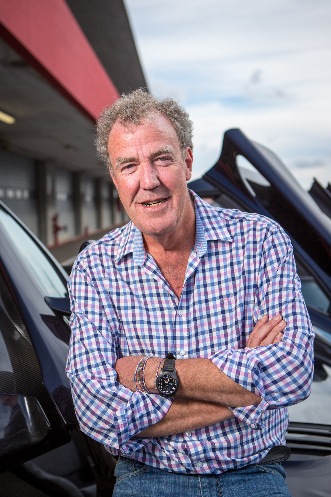
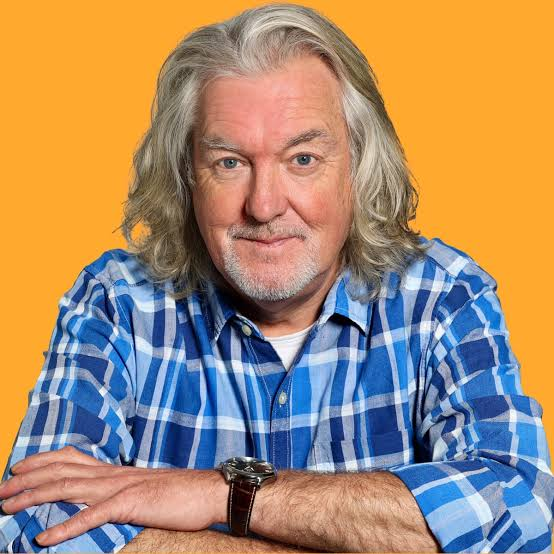
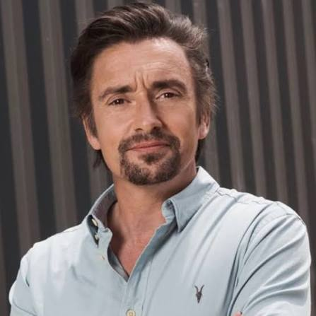

The full story of the unstoppable rise of Clarkson, Hammond, May, and the Stig and how they created one of the most famous TV shows of the 21st century Reaching a peak in the 1990s thanks to presenter Jeremy Clarkson, the original series faced the axe in 2001 but Clarkson and producer Andy Wilman successfully pitched a new format to BBC bosses and Top Gear returned to become the irreverent, funny, and often controversial show we now know and love. The addition of Richard Hammond and James May completed the Top Gear dream team and ratings soared as viewers tuned in to see the latest Star in a Reasonably Priced Car, arguments over the Cool Wall, and Power Laps by the mysterious Stig. Recent seasons have been defined by their madcap challenges with predictably hilarious results. Hour-long specials.


